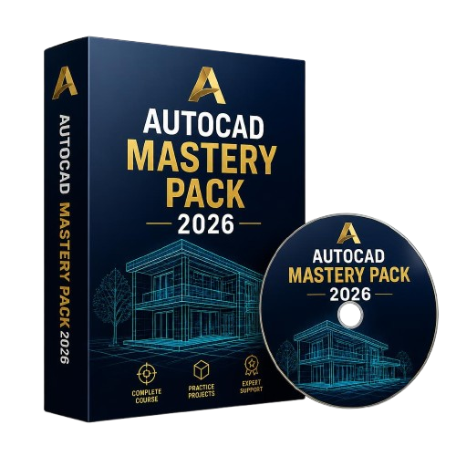

Teknik Sipil, Arsitektur & Teknik Mesin
Belajar AutoCAD lebih cepat tanpa harus mencari tutorial satu per satu di YouTube. Mulai dari perintah dasar, gambar rumah, instalasi listrik, piping, hingga desain komponen mesin 3D.

Bingung saat dosen memberikan tugas AutoCAD
Sudah menonton banyak tutorial YouTube tapi tidak paham
Sulit membuat gambar teknik yang rapi dan profesional
Ingin melamar kerja tetapi skill AutoCAD sekarang membuat kurang percaya diri
Tidak tahu harus belajar darimana karena materi AutoCAD sangat luas
Harus menghabiskan waktu berjam-jam mencari tutorial yang sesuai kebutuhan
Jika Anda merasakan salah satu masalah di atas, Anda tidak sendirian.
Banyak mahasiswa teknik, fresh graduate, bahkan calon drafter mengalami hal yang sama.
Dirancang untuk membantu pemula hingga tingkat lanjut menguasai AutoCAD secara sistematis.
💡 Bukan sekadar teori, tapi praktik nyata yang digunakan dalam dunia pendidikan dan industri.
Materi kurikulum terintegrasi dari fundamental dasar hingga studi kasus spesialisasi industri industri kerja.
Pelajari fungsi setiap tools AutoCAD secara cepat melalui video pendek yang mudah dipahami.
Kuasai fondasi AutoCAD mulai dari dasar hingga pembuatan objek solid 3D secara presisi.
Dan berbagai gambar kerja arsitektur lainnya.
Dan puluhan objek teknik manufaktur lainnya.
Belajar membuat rancangan sistem perpipaan industri, tangki penyaluran, dan komponen terkait.
40 video rahasia produktivitas untuk mempercepat waktu pembuatan aset gambar proyek.
Kebanyakan kursus AutoCAD hanya fokus pada pengenalan *command* dasar saja. Masalah utamanya adalah setelah memahami instruksi tombol, banyak orang tetap bingung membuat gambar teknik yang sesungguhnya secara mandiri.
Di dalam paket ini Anda belajar:
Langkah demi langkah membuat objek langsung ke modul proyek nyata yang biasa digunakan di dunia kerja teknik asli.
❌ Kalau kamu masih belajar AutoCAD dengan cara mencari tutorial satu per satu di YouTube...
😩 Yang lebih berbahaya...
Banyak mahasiswa teknik mengira masalah besarnya hanyalah sebatas urusan pemenuhan tugas kuliah harian saja. **Padahal masalah krusial yang sebenarnya baru akan benar-benar terasa nyata setelah Anda lulus wisuda.**
IPK sudah keluar secara resmi. Ijazah kelulusan sudah di tangan. Teman-teman seangkatan sudah mulai gencar melamar berbagai posisi pekerjaan. Lalu pihak internal HRD perusahaan besar bertanya secara lugas saat interview:
Dan saat itulah banyak lulusan teknik baru mulai tersadar... Bahwa sertifikat gelar akademik saja tidak pernah cukup. Perusahaan tidak hanya melihat lembaran nilai ijazah. **Mereka aktif mencari praktisi yang benar-benar memiliki skill siap pakai.**
Padahal saat kelulusan itu resmi tiba, roda persaingan ketat sudah langsung dimulai.
Solusi Terarah Akhir Penantian
Untuk membantu kamu menguasai program AutoCAD secara jauh lebih terarah. Bukan sekadar memahami deretan tombol command, tetapi terfokus penuh membangun pondasi skill teknis yang benar-benar mutlak dibutuhkan saat masa perkuliahan, pengerjaan proyek, magang, maupun dunia kerja nyata.
📚 Ringkasan Yang Akan Langsung Kamu Dapatkan:
Saat teman-teman seangkatanmu masih bingung meraba arah belajar AutoCAD mulai dari mana... Kamu sudah menguasai fungsi penuh tools penting, mampu membuat berbagai format cetak gambar teknik struktural, dan memiliki portofolio skill matang yang siap digunakan.
Karena keahlian tidak dibangun dalam semalam. Skill nyata dibangun dari ketegasan keputusan kecil yang berani kamu ambil hari ini.
⚡ Promo Akan Berakhir
Harga Normal: Rp 497.000
Total Value Kurikulum: Rp 2.500.000
Rp 97.000
✔ Hanya bayar satu kali (No Hidden Fees)
✔ Hak akses lisensi materi selamanya
🔒 Pembayaran aman, instan, otomatis tervalidasi via sistem gateway Mayar. Akses link download/dashboard materi dikirim langsung ke email Anda dalam 1 detik setelah pembayaran berhasil.
⏳ Setiap hari kamu menunda belajar AutoCAD, orang lain di luar sana sedang konsisten meningkatkan kemampuannya.
Dan ketika kesempatan lowongan kerja impian itu datang... Yang dipilih perusahaan bukan yang paling lama menunda, tetapi kandidat yang paling siap.
Jangan tunggu sampai lulus baru panik karena kapasitas skill praktismu masih nol. Mulai bangun kemampuan karir masa depanmu hari ini!